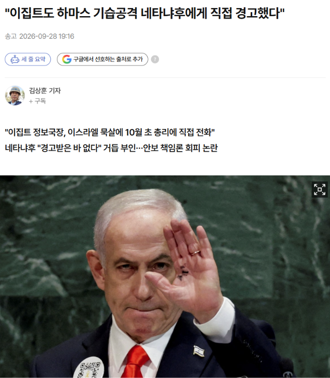
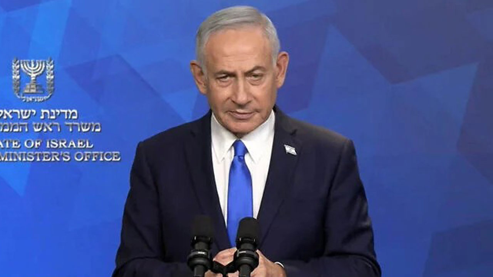
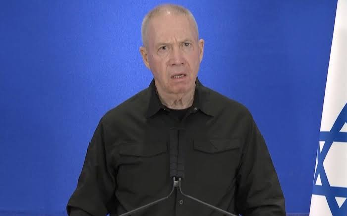
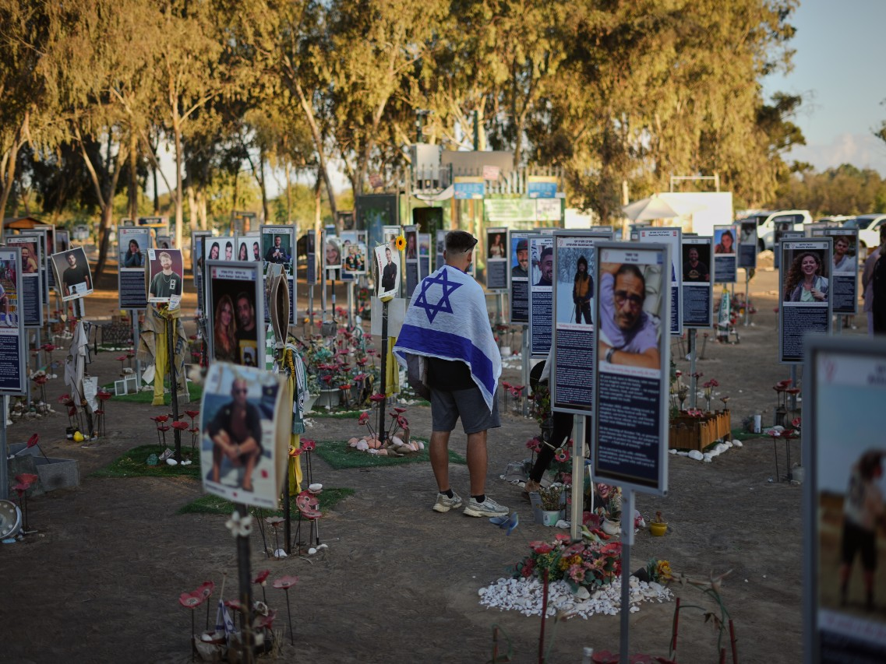
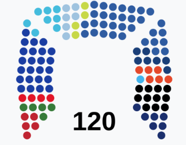

- 월스트리트저널, AP 통신, 타임스오브이스라엘 보도
가자전쟁의 발단이 된 2023년 10월 7일 하마스의 기습공격을
이집트가 사전에 수차례 경고했으나 이스라엘이 씹었다는 폭로가 터짐
기습공격 한달 전 이집트 정보국장이 가자지구 상황에 대해 경고했는데
이에 이스라엘 당국자들은 상황이 완전히 통제되고 있다고 일축함
결국 이집트 국가정보국 국장에 네타냐후한테 직접 통화하면서까지 경고했고
이후 기습공격 이틀 전에도 반복해서 경고했는데 이스라엘은 이를 무시함
UAE 대통령도 네타냐후와의 통화에서 하마스 공격을 경고했던 것으로 알려짐
이 내용이 보도되자, 지난주 네타냐후는 비밀리 UAE에 방문해서
UAE 대통령에서 '해당 보도를 부인해달라'고 요청했다고 함
(구체적인 일자, 규모가 담긴 경고는 아니었음)

현재 네타냐후는 경고를 받은 적 없다고 부인하고 있는데
정보당국의 무능을 탓하며, 사전에 정보를 입수했다면 학살을 방지했을 거라고 밝힘

반면 전 국방부장관 요아브 갈란트는
이집트나 UAE가 경고했다는 사실을 자기도 뉴스를 통해 알았다며,
만약 정보가 공유되었다면 막을 수 있었을 거라고 반박함
즉 총리실 외부로 정보가 전혀 공유되지 않았다는 것

2023년 10월 7일
하마스는 이스라엘 남부를 기습 침공하여 민간인 900여명을 학살하고 수백명의 인질을 납치함
이에 이스라엘이 가자지구에 공습을 가하면서 가자전쟁이 발발,
현재까지 7만명이 넘는 팔레스타인과 이스라엘 사망자가 발생함
만약 이 일련의 폭로들이 사실이라면 (상당히 유력하게도)
네타냐후는 자국민 학살 위험을 알고도 방조한 것인데,
하마스 침공에 대한 국가조사위원회 구성을 거부하고 있어서
정식 조사가 이뤄지지 않고 있는 상황

한편, 10월 27일에 이스라엘 총선이 예정되어 있음
연립여당이 간신히 60석을 사수하고 있는 아슬아슬한 상태인데
최근 5개 야당이 선거 연합을 결성한다고 발표하고 네타냐후 내각을 향해 총공세를 가하고 있음
현 여권 지지율을 고려하면, 네타냐후의 실각 가능성이 적지 않은 것으로 예상됨

의도적으로 방치했다는 설이 설득력을 얻네